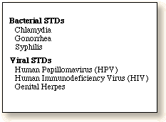

Introduction to Sexually Transmitted Diseases Problem Set
| Sexually transmitted diseases (STDs), as the term implies, are diseases transmitted through sexual activities. Although most of these diseases are readily preventable, each year more than 12 million cases are reported in the United States. Because the infections often do not cause any symptoms, many more cases go undetected and untreated. |
Health Impact
| The health impact of these diseases is particularly severe for women. Sexually transmitted diseases may cause serious complications including pelvic inflammatory diseases, ectopic pregnancy, infertility, chronic pelvic pain, cancer, and death. An infected mother may also affect the health of her offspring. | |
|
Regular pap smear and medical exams are strongly recommended for all sexually active women.
Infected persons and their sexual partners must be tested and treated.
Bacterial infections can be cured with specific antibiotics. There is presently no known cure for viral infections, but treatments are available to relieve the symptoms and to reduce the likelihood of infecting a sexual partner. |
 |
|
STDs are transmitted by exchange of body fluids or by direct contact with the infected area. It is also believed that most sexually transmitted diseases facilitate the transmission of HIV infection. (A review of the introduction to Immunology might be helpful.) Condoms are very effective in preventing the transmission of several
sexually transmitted diseases.
Condom failure is more often the result of inconsistent and incorrect use than the result of breakage. Condom breakage rate is very low in the United States and each latex condom is electronically tested for holes before packaging. The Food and Drug Administration (FDA) regulates condom production. Like medical devices, they are subject to random testing by the FDA. |


University of Arizona
Wednesday, December 3, 1997
Contact the Development Team
http://biology.arizona.edu
All contents copyright © 1997. All rights reserved.